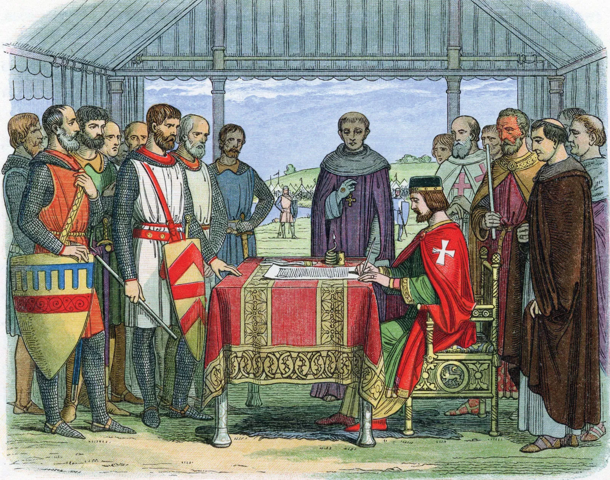

1095 – Az első keresztes hadjárat meghirdetése

A papok azt mondták, hogy hadjárat indul a Szentföldre. Sok lovag és ember elment harcolni.
1215 – Magna Carta

Hallottam, hogy Angliában a nemesek rákényszerítették a királyt egy oklevél aláírására. Azt mondják, ez korlátozza a király hatalmát.
1317 – Pestisjárvány

A pestis elérte a falunkat is. Sok szomszédom meghalt, és mindenki rettegett a betegségtől.